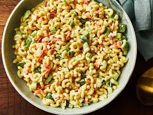

CLASSIC MACARONI SALAD

Description
This macaroni salad always gets lots of compliments.
It's an easy recipe to make and has a pleasing taste that everyone seems to love!
Ingredients
- 4 cups uncooked elbow macaroni
- 1 cup mayonnaise
- ⅔ cup white sugar
- ¼ cup distilled white vinegar
- 2½ tablespoons prepared yellow mustard
- 1 ½ teaspoons salt
- ½ teaspoon ground black pepper
- 2 stalks celery, chopped
- 1 large onion, chopped
- 1 green bell pepper, seeded and chopped
- ¼ cup grated carrot (Optional)
- 2 tablespoons chopped pimento peppers (Optional)
Steps
- Cook the macaroni in salted water.
- Mix the mayonnaise, sugar, vinegar, mustard, and seasonings together.
- Stir in the macaroni and remaining ingredients. Chill in the refrigerator.